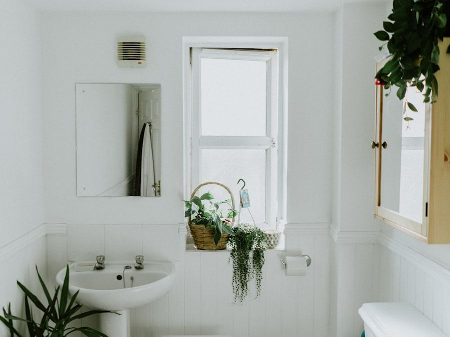
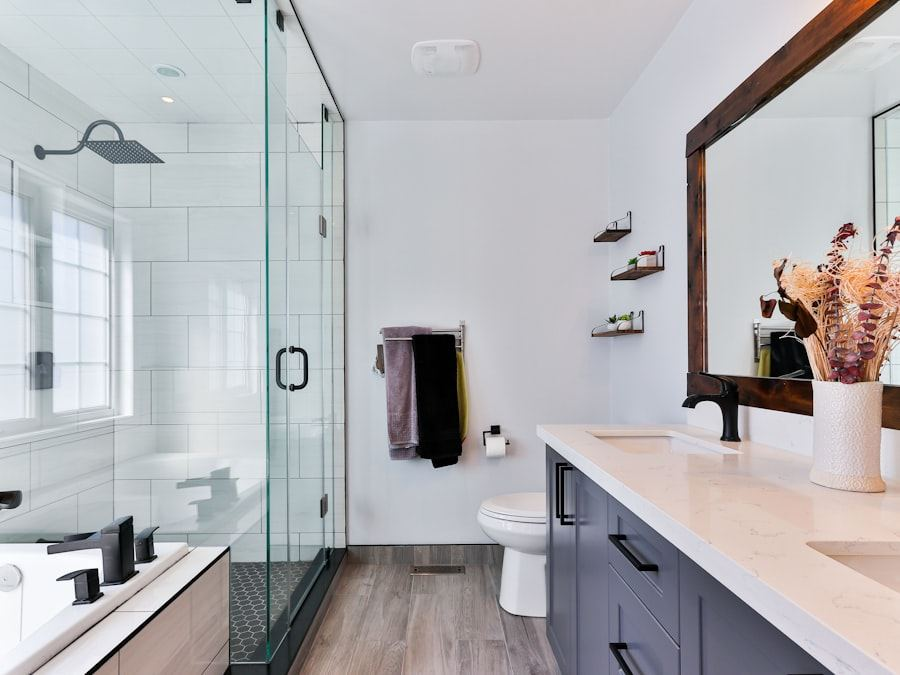

Leistungsübersicht
Klar gegliedert, was Sie anbieten – und was nicht. Vom Badumbau bis zur Wartung, verständlich formuliert statt in Fachchinesisch. So kommen nur Anfragen rein, die zu Ihrem Betrieb passen.
Für Meisterbetriebe & Werkstätten
Ihre Kunden empfehlen Sie weiter – aber wer Sie googelt, findet nichts oder eine Seite von 2011. Ich baue Ihnen eine Website, die Anfragen bringt, während Sie auf der Baustelle stehen. Zum Festpreis, in zwei Wochen online.
Unverbindlich anfragenWer einen Handwerker sucht, will drei Dinge wissen: Können die das? Kommen die zu mir? Und wie erreiche ich sie? Ihre Website beantwortet alle drei – ohne Umwege.
Klar gegliedert, was Sie anbieten – und was nicht. Vom Badumbau bis zur Wartung, verständlich formuliert statt in Fachchinesisch. So kommen nur Anfragen rein, die zu Ihrem Betrieb passen.
Nichts überzeugt wie Ihre fertigen Projekte. Vorher-Nachher-Bildpaare mit kurzer Beschreibung: Aufgabe, Lösung, Dauer. Drei gute Referenzen schlagen jede Werbebroschüre.
Eine Karte zeigt, wo Sie rausfahren: Ihr Umkreis, Ihre Städte, Ihre Stadtteile. Wer außerhalb wohnt, ruft gar nicht erst an – das spart Ihnen und Ihren Kunden Zeit.
Kunden beschreiben ihr Anliegen und laden Fotos vom Schaden hoch – Sie rufen zurück, wenn es passt. Kein verpasster Anruf mehr, wenn Sie mit beiden Händen am Werkstück stehen.
Wenn Sie Notdienst anbieten, gehört er gut sichtbar auf jede Seite: eigene Rufnummer, Zeiten, Einsatzgebiet. Wer nachts einen Rohrbruch hat, muss Ihre Nummer in drei Sekunden finden.
Meisterbrief, Innungsmitgliedschaft, Hersteller-Zertifikate: Ich setze Ihre Qualifikationen sichtbar in Szene. Das schafft Vertrauen, bevor Sie das erste Wort gewechselt haben.
Beispiel einer Referenz-Darstellung: ein Projekt, zwei Bilder, drei Sätze.


„Komplettsanierung eines Familienbads in Frankfurt-Bornheim: Rückbau, neue Leitungen, bodengleiche Dusche. Fertig in zehn Werktagen, Festpreis eingehalten.“
Platzhalter:
Karte Rhein-Main mit
eingezeichnetem Anfahrtsgebiet
Auf Ihrer Website zeichnen wir Ihr Anfahrtsgebiet auf einer Karte ein – zum Beispiel Frankfurt, Offenbach und der Kreis Main-Taunus. Dazu eine Liste der Orte, in denen Sie regelmäßig arbeiten. Das hilft doppelt: Kunden wissen sofort, ob Sie kommen, und Google zeigt Ihren Betrieb bei Suchen wie „Elektriker Bad Vilbel“ weiter oben an.
Ein schneller Onepager zum klaren Festpreis. Brauchen Sie mehr als eine Seite? Schildern Sie mir kurz, was Sie vorhaben – Sie bekommen ein passendes Angebot.
Schnellster Start
459 €
einmalig, Festpreis
Auf Anfrage
individuelles Festpreisangebot
Referenzen mit Vorher/Nachher, Anfrageformular mit Foto-Upload, eigene Seite je Leistung, Stellenanzeigen – jeder Betrieb ist anders. Sagen Sie mir kurz, was Sie brauchen, ich melde mich mit einem klaren Festpreis, nicht mit einem Stundensatz.
Unverbindlich anfragenDanach optional: Pflege & kleine Änderungen für 29 € im Monat – monatlich kündbar.
Wir telefonieren nach Feierabend oder ich komme in Ihre Werkstatt. Eine halbe Stunde reicht – danach steht Ihr Festpreis.
Nach einer Woche sehen Sie Ihre Seite im Browser – mit Ihren Leistungen, Ihren Referenzen, Ihrem Meisterbrief. Sie sagen, was noch fehlt.
Domain, Webspace, Google-Eintrag: Ich richte alles ein. Nach spätestens zwei Wochen bringt Ihre Website die ersten Anfragen.
Aus Frankfurt, für Rhein-Main
Ich arbeite nur mit Betrieben aus dem Rhein-Main-Gebiet – von Hanau bis Mainz, von Bad Homburg bis Darmstadt. Wenn etwas ist, bin ich in einer halben Stunde bei Ihnen und nicht in einer Warteschleife.
Jetzt Festpreis anfragen